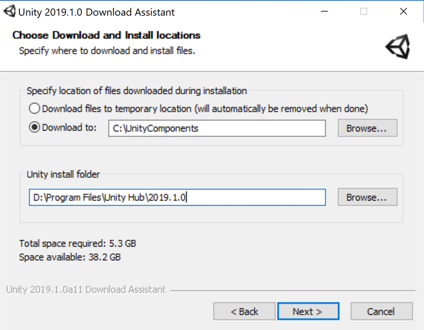
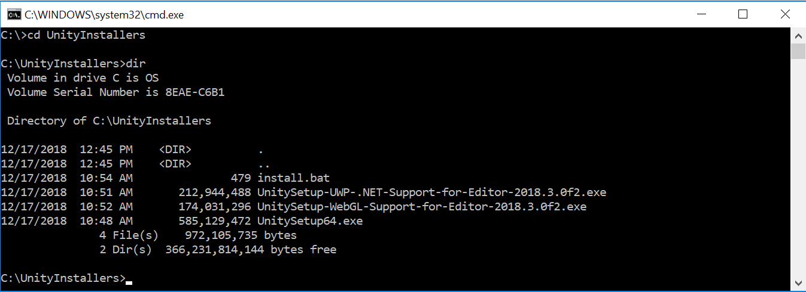

If you want to automate the deployment of Unity in an organization, you can install the Editor and other components from the command line. The components are normal installer executable programs and packages which you can use to automate the deployment of Unity.
To download the components, you use the Unity installer to download the Unity components to a folder on your computer.
Download and run the installer. Release versions of the installer are available from the the Unity download archive. For Prerelease versions of the installer, see the Beta programs page.
In Choose Components, select all of the components for which you are automating deployment.
In Choose Download and Install locations, click the Download to radio button.
Enter a location in which to store the component installers.
Finish the install.

Navigate to the download location you specified. In the folder, you will find the installer files for the components you selected and a script file (install.bat on Windows or install.sh on Linux or OS X) that you can run to install the components.

Downloaded installers on Windows
To install Unity on another computer using the downloaded components, copy the contents of the folder to the destination computer and execute the install script.
Installing individual Unity components on Windows from the command line
Use the following options when installing the Editor and other components from the command line on Windows.
Note: Installer command line arguments are case-sensitive.
Unity Editor install
Command
Details
/S
Performs a silent (no questions asked) install.
/D=PATH
Sets the default install directory. Useful when combined with the silent install option. The default folder is C:\Program Files (x86)\Unity (32-bit) or C:\Program Files\Unity (64-bit).
Example:
UnitySetup64.exe /S /D=E:\Development\Unity
This example installs Unity silently to a E:\Development\Unity folder, which will be the root of the Unity installation. In this case, the Editor executable is installed in E:\Development\Unity\Editor\Unity.exe. The default install directory must be the last argument on the command line. The supplied path must not be surrounded by quotes, even if the path contains spaces.
Unity Editor uninstall
To perform a silent uninstall, run Uninstall.exe /S from the command line or a script.
Note: Although the process finishes right away, there is a delay before the files are actually removed. This is because the uninstaller is copied to a temporary location to enable it to remove itself. Make sure that the working directory is not inside the Unity install location. If it is, the uninstaller will be unable to remove the folder.
Standard Assets install
To silently install Standard AssetsA collection of useful assets supplied with Unity. Unity ships with multiple Standard Asset such as 2D, Cameras, Characters, CrossPlatformInput, Effects, Environment, ParticleSystems, Prototyping, Utility, and Vehicles. More info See in Glossary:
Note: If specifying a folder, use the Unity root folder (that is, the folder containing the Editor folder, and not the folder in which Unity.exe is installed.)
If you prefer to download Unity via a BitTorrent client, you can download get a torrent link from the Unity download archive page. Not all versions have a torrent download. If a version is available to download as a torrent, the option is presented as Torrent download (Win+Mac) in the Downloads dropdown menu.
Downloading Unity using a Torrent
Installing several versions at once
You can install multiple versions of Unity on the same computer.
On a Mac, the installer creates a folder called Unity, and overwrites any existing folder with this name. To install more than one version of Unity on your Mac, rename the existing Unity folder before installing another version.
On a PC, the install folder is always named Unity X.Y.Z[fp]W, where the f is for an official release, and p is used to mark a patch release.
We strongly recommend that if you rename a Unity folder, you name the new folder logically (for example, add the version number to the end of the name). Any existing shortcuts, aliases and links to the offline docs might no longer point to the old version of Unity. This can be particularly confusing with the offline docs; if you suddenly find that browser bookmarks to the offline docs no longer work, then check that they have the right folder name in the URL.
2018–12–19 Page amended
2018–06–12 Page amended
Installation advice updated in Unity 2017.2
Installation advice updated in Unity 2017.4
Did you find this page useful? Please give it a rating:
Is something described here not working as you expect it to? It might be a Known Issue. Please check with the Issue Tracker at issuetracker.unity3d.com.
Thanks for letting us know! This page has been marked for review based on your feedback.
If you have time, you can provide more information to help us fix the problem faster.
You've told us this page needs code samples. If you'd like to help us further, you could provide a code sample, or tell us about what kind of code sample you'd like to see:
You've told us there are code samples on this page which don't work. If you know how to fix it, or have something better we could use instead, please let us know:
You've told us there is information missing from this page. Please tell us more about what's missing:
You've told us there is incorrect information on this page. If you know what we should change to make it correct, please tell us:
You've told us this page has unclear or confusing information. Please tell us more about what you found unclear or confusing, or let us know how we could make it clearer:
You've told us there is a spelling or grammar error on this page. Please tell us what's wrong:
You've told us this page has a problem. Please tell us more about what's wrong:
Thanks for helping to make the Unity documentation better!